TRAVELING IS IMPORTANT
For us, the best mountains are those that capture the imagination of locals and visitors alike. The ones that have played a role in local folklore for centuries, and which continue to draw travelers from around the world today.
THE HIMALAYAS
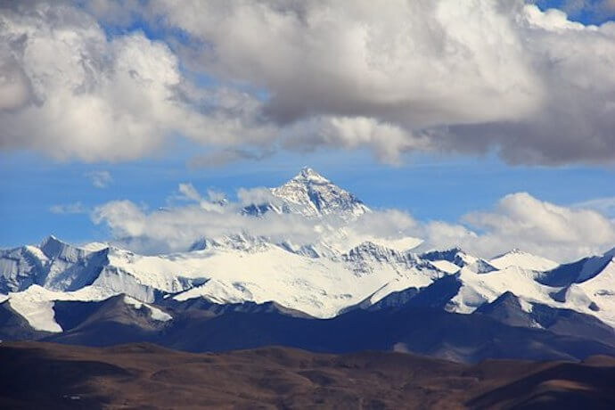If this list were purely based on the world’s 25 tallest mountains, then we wouldn’t even make it out of this iconic Asian range.
The Himalayas stretch around 1,500 miles, from Pakistan and India east to China, Nepal, and Bhutan. These mountains aren’t just skyscrapers;
they are like earthly divinities of the skies.
Mount Everest, which towers at a whopping 29,029 feet above sea level, is the world’s tallest (and arguably most deadly) mountain.
In the Tibetan language, it is referred to as the “Goddess Mother of the World.” Its jagged peaks represent the border between Nepal and the autonomous
region of China recognized as Tibet. It is the highest mountain in the world.
MOUNT DAMAVAND
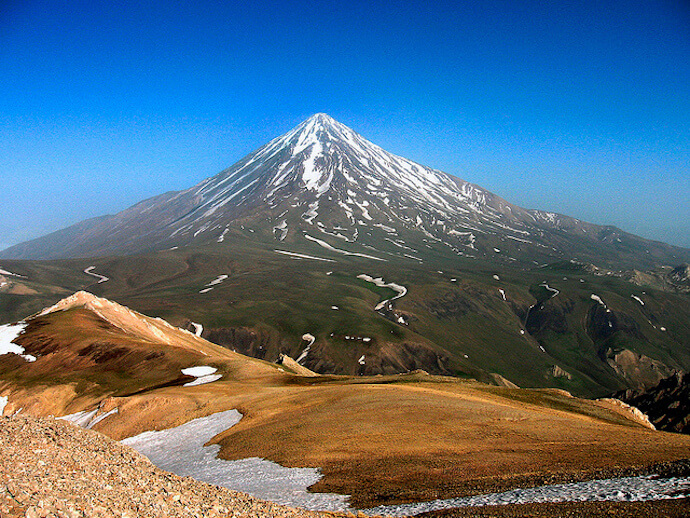When you’re talking about the world’s biggest mountains, Iran is probably not the first place that usually comes to mind.
But Mount Damavand, which stands at 18,600 feet high, is both the tallest mountain in the Middle East and the second highest volcano in all of Asia.
It is also the world’s 12th most prominent peak when measuring from lowest bottom to tippy top. All that, and it remains a potentially active volcano!.
This majestic mountain is steeped in history and features prominently throughout Persian mythology. According to legend, Mount Damavand is home to a three-headed
dragon and is wrought with magical powers. In more practical, modern terms, it is featured on the 10,000 Iranian rials banknote.
MOUNT KINABALU
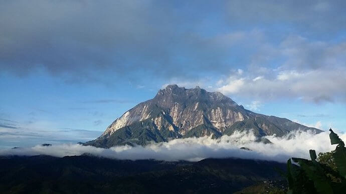Mount Kinabalu is part of Kinabalu Park, a protected UNESCO World Heritage Site located in Sabah, Borneo. It is the highest point between the peaks of the Himalayas and New Guinea.
This Malaysian mountain is part of the Crocker Range, a collection of peaks that are renowned for their botanical and biological diversity.
Mount Kinabalu is home to around 6,000 different plants, including rhododendrons, orchids (about 1200 species!), chestnut trees, figs, mosses, ferns, and the world’s largest Rjah Brooke’s pitcher plant..
MOUNT FUJI
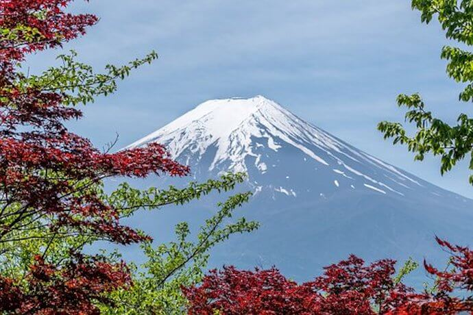Though not technically one of the tallest mountains in the world, Mt. Fuji is the tallest mountain in Japan, measuring in at just under 12,400 feet. It’s also one of the planet’s most recognizable mountains.
Mount Fuji is a stratovolcano– a composite cone caused by a series of serious eruptions that leave behind layers of rock, ash, and lava. More notable, the volcano is still active and sits atop a junction of three tectonic plates.
Beyond the rocks, though, Mt. Fuji has become much more than a statistic of the Japanese landscape. It’s the most visited tourist site in all of Japan, with more 200,000 climbers ascending its summit annually.
AORAKI/MOUNT COOK
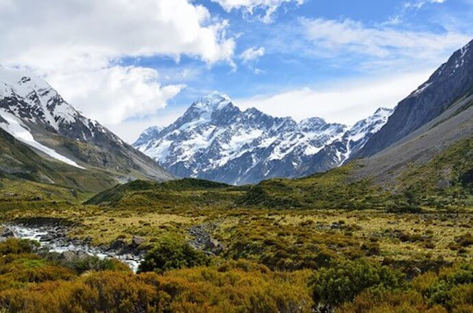Aoraki (otherwise known as Mount Cook) is the tallest mountain in New Zealand.
It’s located in Aoraki/Mount Cook National Park, where there are over 20 peaks that either near or exceed the 10,000-foot mark, as well as the longest glacier in New Zealand. The park is particularly renowned for its incredible stargazing opportunities.
The park provides several huts on the mountain for skilled climbers to use. For those who are not quite so lofty in their goals, there are also luxury hotels with “barstool views” and secluded lodges.
Tourist activities in the area include helicopter tours, skiing, glacier gliding, and mountaineering. However, be advised that the mountain does receive around 394 inches of rain each year.
SOME OTHER GREAT PICTURES
 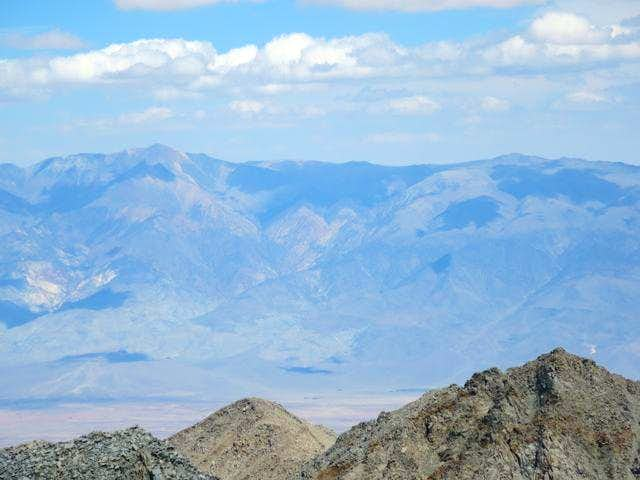
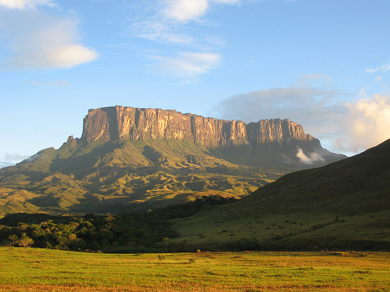
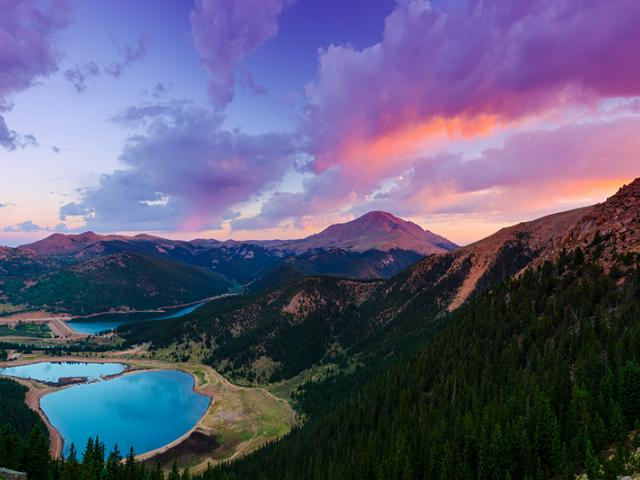
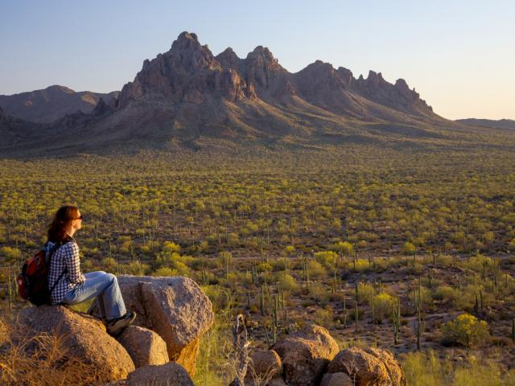
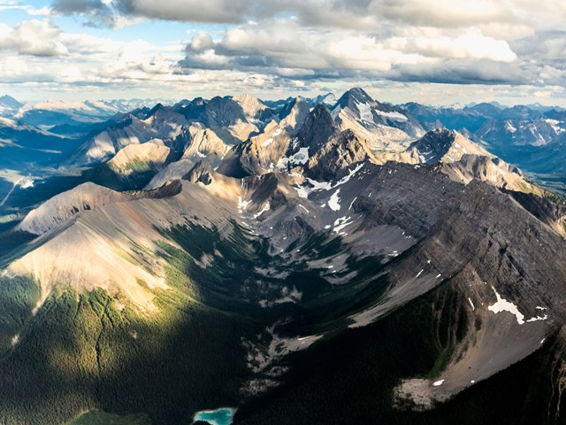
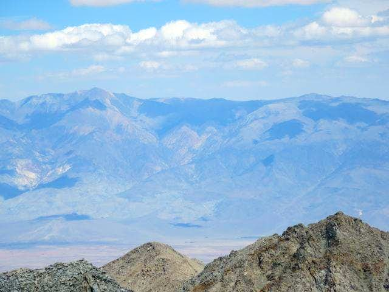
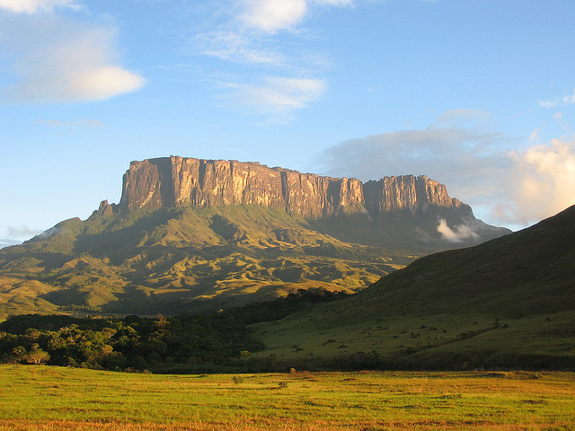
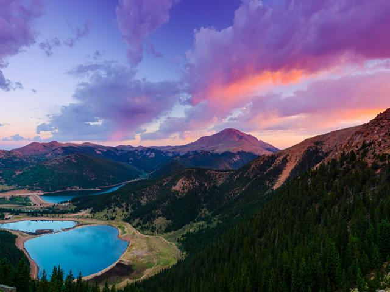
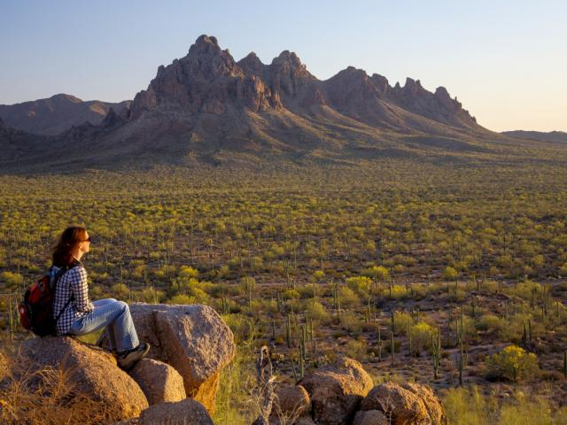
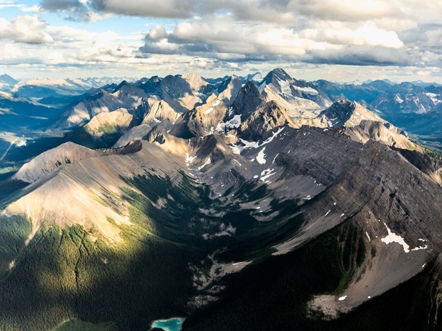